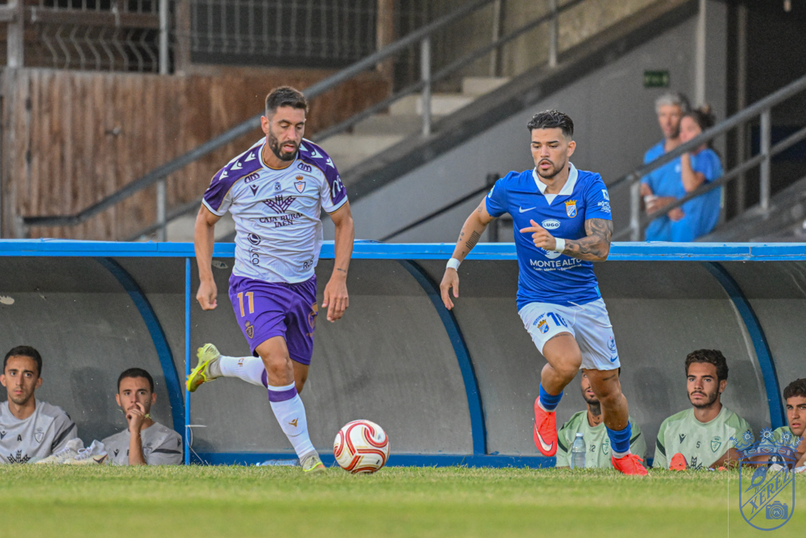

Los pitos que no tocan: pretemporada no es tiempo de exigir, es tiempo de construir

Foto: PuroXerecismoLos pitos que se escucharon en Chapín durante el amistoso ante el Real Jaén reabren un debate de fondo: qué se le puede pedir a un equipo que todavía está en pleno proceso de construcción.
Ayer, en pleno Trofeo Feria de la Vendimia, Chapín sacó a relucir algo que últimamente se ha vuelto demasiado habitual: los pitos. Llegaron en pleno primer tiempo, con el equipo todavía dando sus primeros pasos serios de la pretemporada, recién presentado ante su gente apenas unos minutos antes entre aplausos y cariño. Y ahí está la contradicción que conviene señalar: la misma grada que ovacionó a la plantilla al salir al césped la recibió con silbidos media hora después, como si el partido fuera ya una final de play-off y no un amistoso de preparación en el que el técnico está todavía probando piezas, sistemas y jugadores.
Da la sensación de que se nos ha olvidado en qué fase del calendario estamos. Estamos en agosto, con la Liga arrancando dentro de dos semanas y media, con Molist rotando bloques enteros partido tras partido, con fichajes que todavía no se conocen entre sí y con un once que ni siquiera es, a día de hoy, el que se presume titular. Es precisamente el momento de equivocarse, de probar, de encajar goles evitables y de que un mediocentro no termine de encontrar su sitio. Para eso sirve la pretemporada. Exigir en agosto el nivel de competición de febrero es, sencillamente, no entender el proceso.
Y ya no es solo el resultado o el rendimiento en el campo. Ahora se critica todo: la camiseta, el dorsal, el peinado del entrenador, el orden de las presentaciones. Cualquier detalle, por pequeño que sea, se convierte en munición para la queja fácil, sin apenas margen ni paciencia para un proyecto que necesita tiempo para asentarse. Es un fenómeno que no es exclusivo del Xerez CD, desde luego, pero que en Jerez duele especialmente por lo que representa la memoria reciente de este club.
Porque conviene no olvidar de dónde venimos. Hace apenas tres años este escudo se movía entre el barro, en categorías regionales, arrastrando problemas económicos, administrativos y estructurales que pusieron en serio riesgo la propia continuidad del club. Aquellos años enseñaron a la fuerza lo que de verdad importa: que hubiera equipo, que hubiera afición en la grada y que el Xerez CD siguiera existiendo. Todo lo demás, incluidas las lógicas exigencias deportivas de una categoría como Segunda Federación, es un lujo que hoy podemos permitirnos gracias a ese esfuerzo colectivo de resistir cuando de verdad las cosas estaban feas.
Eso no significa que la crítica no tenga cabida, ni que la afición deba aplaudir sin más cualquier cosa que pase en el campo. El seguidor tiene todo el derecho a exigir, a analizar y a preocuparse cuando algo no funciona. Pero hay formas y hay momentos, y un amistoso de pretemporada, con la plantilla todavía en construcción, no es ni el momento ni el lugar para sacar los pitos. Ese comportamiento no ayuda al equipo, no ayuda al técnico y, sobre todo, no se corresponde con el camino que ha recorrido este club para volver a estar donde está. Toca acompañar, apretar los dientes si hace falta, y guardar la exigencia de verdad para cuando de verdad empiecen a repartirse los puntos.
← Volver a la portada